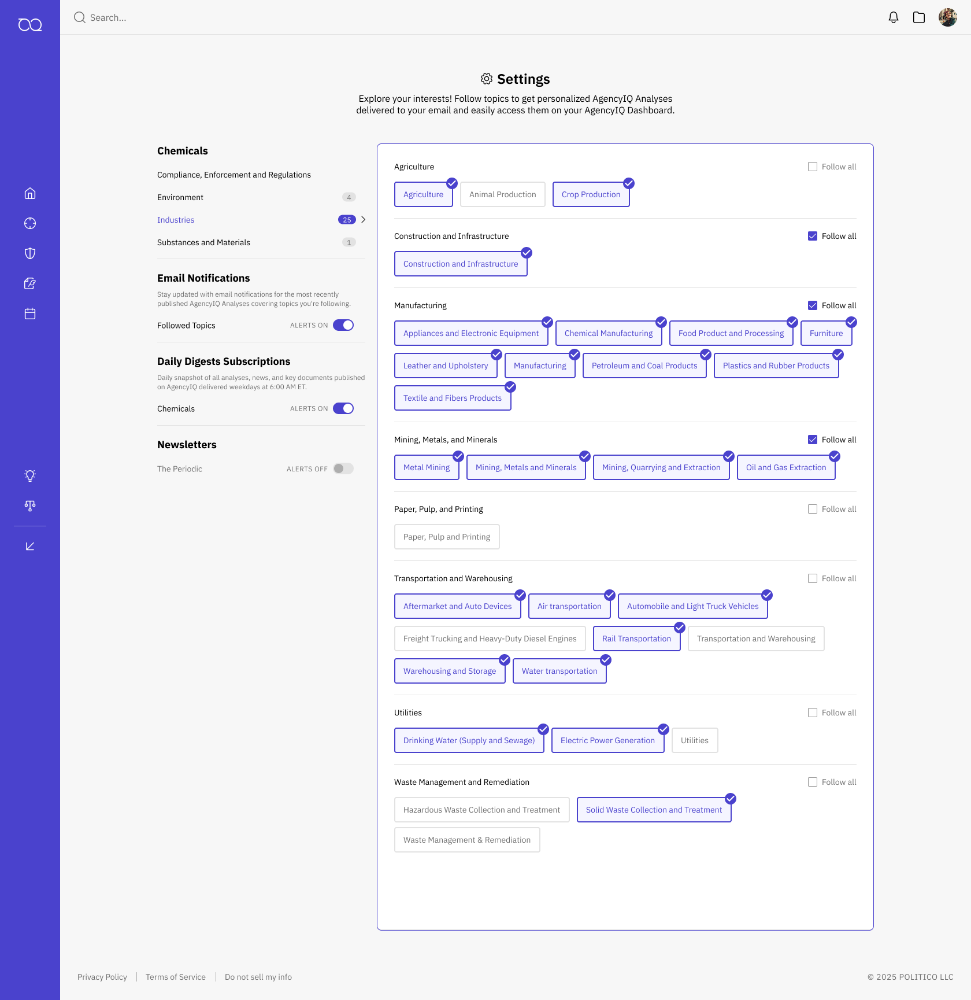
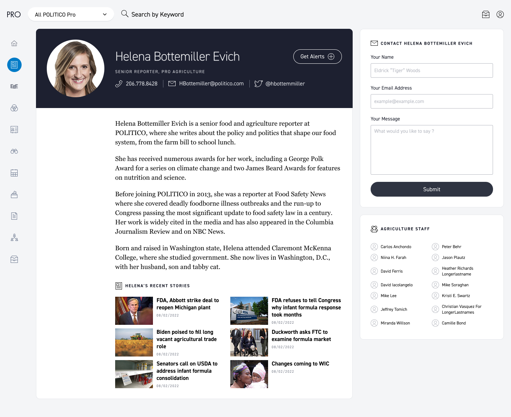
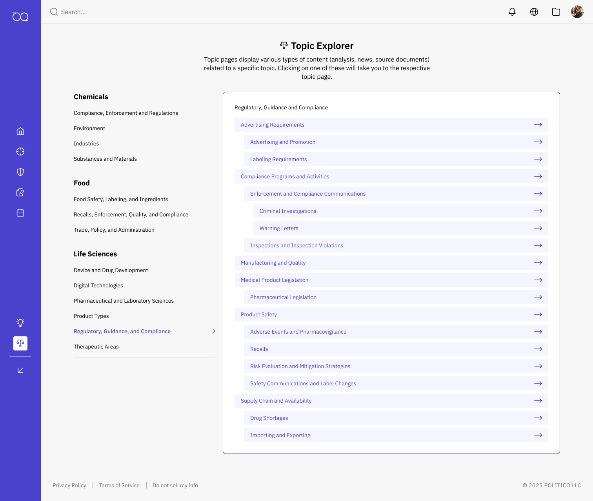
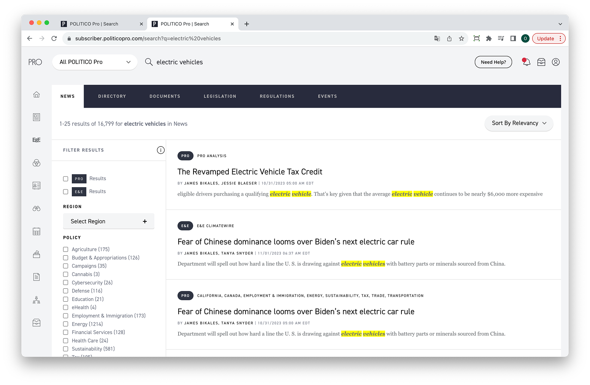
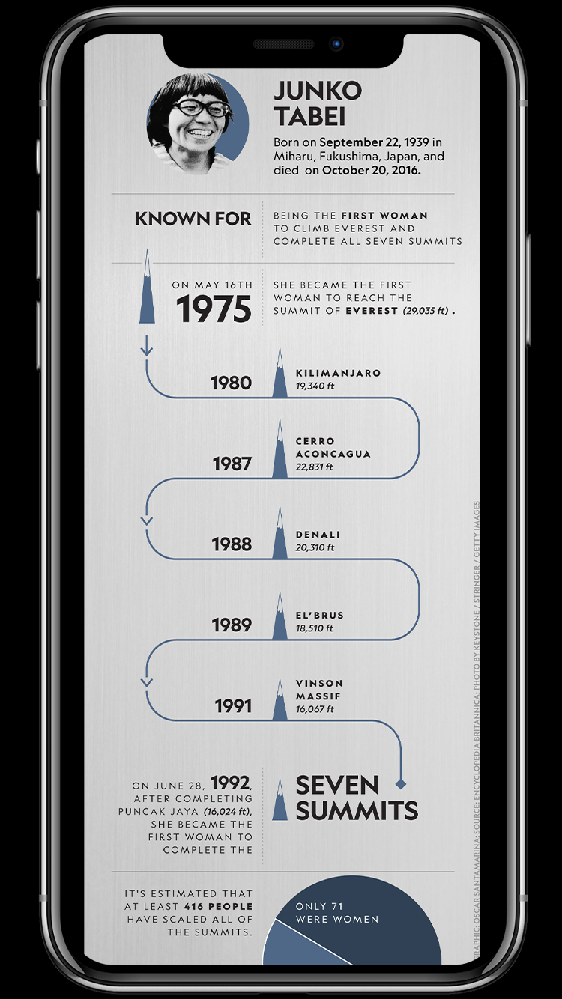

I led creative UX/UI design across our three primary revenue-driving platforms, improving existing experiences and launching new products in close partnership with PMs, engineers, and stakeholders, all while evolving a scalable design system.
Oscar Santamariña

×
×
I believe in minimalism—clean, intentional design that enhances usability. As a
product designer with experience in media, front-end development, and some back-end
work, I create seamless digital experiences where design and technology work in
harmony.
×
×
×
×
×
×
Settings Experience
A comprehensive settings management interface designed to streamline configuration and control. The interface features intuitive navigation, organized sections, and clear visual hierarchy that allows users to efficiently manage system preferences and entitlements.
Role:
UX Design, UI Design
Year:
2024

The settings interface showcases organized entitlement management with clear visual grouping and intuitive controls.
Interactive demonstration of the live production interface showing the complete user flow through settings configuration and management.
×
Reporter BioPages
Reporter bio pages that showcase biography, recent stories, and direct contact options, with the ability for users to follow reporters and receive alerts for new coverage. A core feature for Politico, where reporters are central to the brand’s credibility and prestige.
Role:
UX Design, UI Design
Year:
2022

Main design
Live production interface showing user entering from reporter byline.
Live production interface showing user entering from list of reporters that belong to the same vertical.
×
Topic Explorer
An intuitive content discovery platform that enables users to explore and navigate through interconnected topics seamlessly. The interface combines smart categorization, visual hierarchy, and fluid interactions to help users discover related content and dive deeper into subjects of interest.
Role:
UX Design, UI Design
Year:
2024

Static design showing topics and their parent-child relationship.
Live production demonstration showing the complete user flow through topic discovery and navigation - to following that topic.
×

Inspector Navigator
A comprehensive inspection management platform designed to streamline workflow and enhance search capabilities. The interface features intuitive navigation, advanced filtering options, and a clean dashboard that allows users to efficiently manage and track inspections across multiple properties and timeframes.
Role:
UX Design, UI Design
Year:
2025

Interactive date range controls allow users to filter inspections by specific time intervals with hover states for enhanced usability.

Active search states show inspection-specific details with contextual information and action buttons.

Search results display comprehensive inspection data in an organized, scannable format with clear visual hierarchy.
Interactive demonstration of the live production interface showcasing the complete user flow from search to inspection details.
×
Search Experience Enhancements
Redesigned the search experience to introduce multiple interaction modes—default, direct, and KWIC (Key Word in Context)—addressing limitations in the previous UX that prevented direct querying and produced less predictable, algorithm-driven outcomes.
Role:
UX Design, UI Design
Year:
2023

In the previous UX, users were forced to select a specific product before they could perform a keyword search.
Default search prioritizes News Stories while surfacing relevant product results in a secondary component, supported by smart filtering and relevance ranking.
Direct search enables quick access to specific content with streamlined navigation and instant results.
KWIC (Key Word In Context) search displays results with surrounding context, helping users quickly evaluate relevance.
×
×
BioPages
A comprehensive digital biography platform that combines rich media, interactive timelines, and engaging storytelling. The design focuses on creating an immersive user experience that brings historical figures and their stories to life through carefully crafted visual narratives and intuitive navigation.
Role:
Design, Development, UX
Year:
2024
×
Moon Landing
Video editing, animation
×
Helicoprion
Video editing-production, animation, graphics
×
Mongolia's Smog
Video editing, graphics
×

Explorer Junko
Graphics, design
×
Women of Impact Series
Graphics, design, animation
×
Happiest Places
Graphics, design, animation
×
7 Summits
Graphics, design, animation
×
-
Experience
-
'22
-
'20
Design and develop visual stories and data graphics. Manage digital projects throughout all phases from conception to publication. Collaborate with designers, editors, product owners, and developers.
-
'17
Created editorial videos for digital and social platforms, reaching a daily audience of more than 200 million followers on Facebook, Snapchat and Instagram. Tested and designed mobile-friendly, visually-rich, tap-through experiences balancing video, photo, audio, text, and motion graphics to tell engaging stories.
-
'17
Collaborated with the Art Director, Design Director, and Graphic Editors to produce information graphics, art, maps and layouts for National Geographic Magazine. Assisted with large projects, implementing changes from editors and designers and assuring quality control. Converted and prepared graphics for publishing online.
-
'16
Created layouts for National Geographic Magazine. Collaborated with the Design Director, and Design Editors. Edited and prepared files for publishing online.
-
Formation
-
'13
Dean's List | 3.76 GPA 2014
• Academic Achievement Grant | 2014 -
'09
3.11 GPA
• Men's Golf Scholarship
• NCAA Division II Golf Team Member
• Student-Athlete Honor Roll | 2010
• Presidential Scholarship | 2009 - 2011
Arlington, VA
Washington, D.C.
Online division
Mount Olive, NC